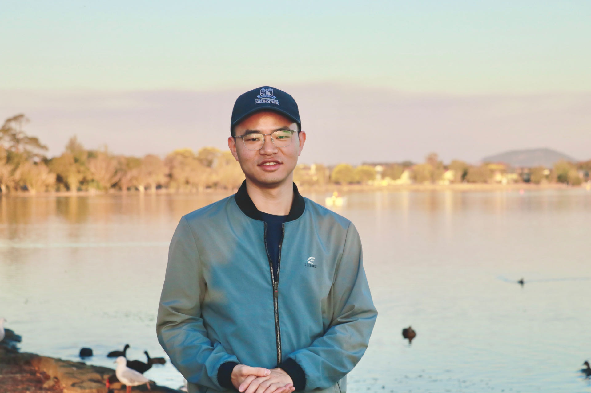
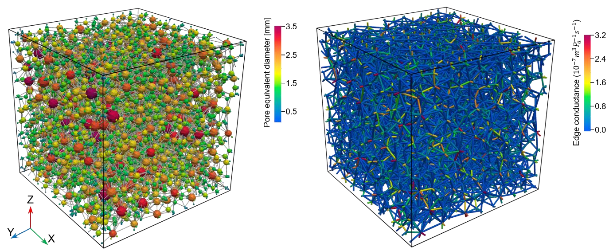
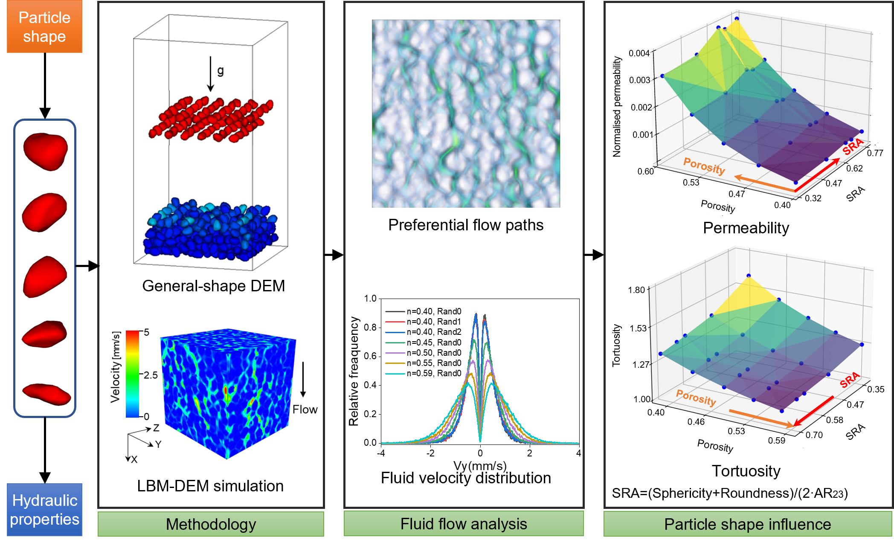
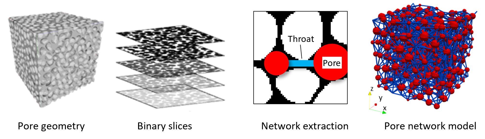
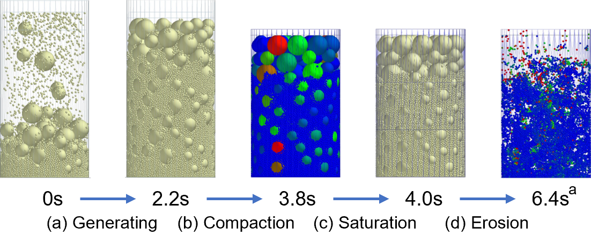

PhD in Geotechnical Engineering · University of Melbourne
2025
Department of Infrastructure Engineering · Supervisor: Professor Guillermo A. Narsilio
Research Engineer at the National University of Singapore
I build computational and data-driven methods for granular materials, fluid-particle systems, and low-carbon geotechnical materials.

I am a Research Engineer in the Department of Civil and Environmental Engineering at the National University of Singapore. My work combines LBM-DEM, CFD-DEM, pore-network modelling, and machine learning to study fluid-particle systems, granular materials, and soft-clay stabilisation. I also develop Bayesian optimisation methods for the data-driven design of low-carbon binders.
I completed my PhD in Geotechnical Engineering at the University of Melbourne in 2025. I previously earned my bachelor’s and master’s degrees in Civil Engineering at Beijing Jiaotong University.
Department of Infrastructure Engineering · Supervisor: Professor Guillermo A. Narsilio
School of Civil Engineering · Supervisor: Professor Dingli Zhang
School of Civil Engineering
Department of Civil and Environmental Engineering, Singapore
Supported undergraduate teaching, assessment, tutorials, and student consultations in Civil Engineering.
Supported academic documentation, student records, and routine administrative coordination.
| Australian Association for Granular Media (ANAGRAM) | Committee Member | 2025–present |
| Australian Geomechanics Society (AGS) | Member | 2023–2024 |
| Australian Tunnelling Society (ATS) | Student Member | 2024–2025 |
| Institution of Civil Engineers (ICE) | Student Member | 2023–2025 |
| Best Paper Award | Chinese PhD Student Association of Australia Conference | 2024 |
| Outstanding Master’s Thesis Award | Beijing Jiaotong University | 2019 |
| Outstanding Graduate | Beijing Municipal Education Commission | 2016 |
| National Scholarship for Undergraduates | Ministry of Education of China | 2014 |
| First Class Scholarship for Postgraduates | Beijing Jiaotong University | 2016–2018 |
| First Class Scholarship for Undergraduates | Beijing Jiaotong University | 2015 |
| Merit Student | Beijing Jiaotong University | 2013–2015 |
| Melbourne Plus: Innovation | University of Melbourne | 2025 |
| Badminton Festa Winner | Graduate Infrastructure Engineering Society | 2024–2025 |
Explore a live 2D discrete element method application for visualising particle interactions and mechanics directly in the browser.




Visualisation from the pore-network analysis preprint.
| XVIII European Conference on Soil Mechanics and Geotechnical Engineering | Lisbon | August 2024 | Oral presentation |
| Australian Association for Granular Media Annual Meeting | Sydney | November 2023 | Poster presentation |
| 15th Annual International Conference on Porous Media | Online | May 2023 | Online poster presentation |
| Australian Association for Granular Media Annual Meeting | Melbourne | November 2022 | Poster presentation |
| Australian Geomechanics Society Victoria Symposium | Melbourne | October 2022 | Oral presentation |
| Volunteer | Infrastructure Engineering Graduate Research Conference | Melbourne | 2024 |
| Volunteer | World Transport Convention | Beijing | 2017 |
| Outstanding Volunteer | 120th Anniversary of Beijing Jiaotong University | Beijing | 2016 |